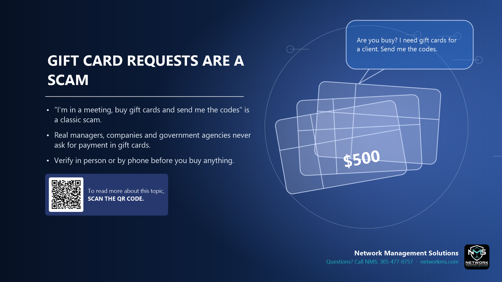

Gift card requests are a scam

- "I'm in a meeting, buy gift cards and send me the codes" is a classic scam.
- Real managers, companies and government agencies never ask for payment in gift cards.
- Verify in person or by phone before you buy anything.
The message usually looks like it comes from the owner or a manager, by email or text: "Are you busy? I need a favor." Then it asks you to buy gift cards for a client or an event and send pictures of the codes.
Once the codes are sent, the money is gone. Gift cards can't be traced or refunded.
If you get a request like this, do not reply to the message. Call the person at the number you know or ask them in person.
Not sure about an email, text or call? Call NMS before you click: 305-477-0757 · networkms.com